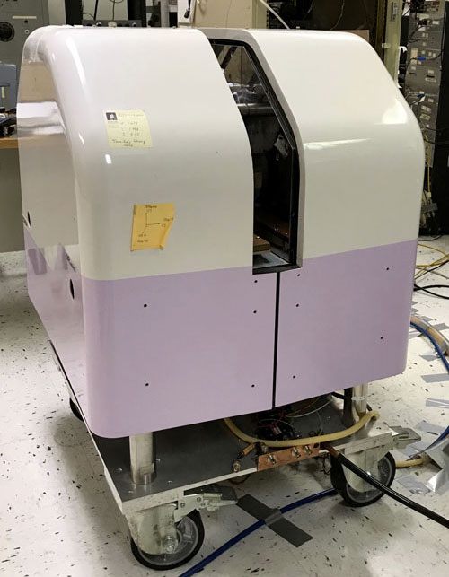
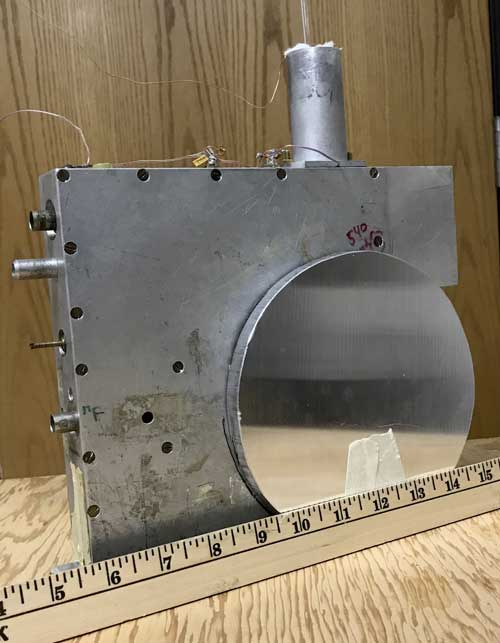
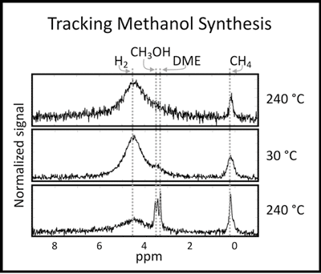
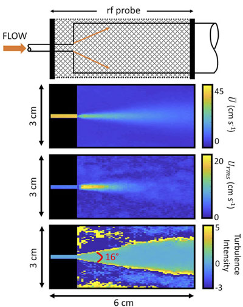

NMR can be used to precisely determine the chemical makeup of a sample and is commonly used in the world of organic chemistry. NMR has previously been used to follow reactions, though typically at mild conditions in terms of temperature and pressure.
ABQMR has built and tested a probe to track reactions at temperatures up to 350 °C and pressures up to 7 MPa (1000 psi). Many chemical processes, especially in the world of refineries, are run at conditions of high temperature and high pressure and in studying these types of reactions it is common to sample a small amount of the reaction products to fine tune the process. To study intermediate steps of the reaction, the test reactors are often cooled and depressurized to allow for sampling and of offline analysis of the products.
Using a 1T (43.6 MHz proton frequency) permanent magnet (Figure 1) and a homebuilt probe (Figure 2), reactions can be tracked in real-time, without need to depressurize or cool the reactor. Methanol synthesis from syngas is shown in Figure 3. In this case, temperature cycling is important to increasing yield. The first spectrum is acquired at 240 °C, the second at 30 °C and the third is again at 240 °C. A rapid temperature response of the system allows tracking of the reaction at high temperatures and as the temperature is cycled.
The reactants are sealed in a thick wall glass capillary (2.6 mm ID, 7 mm OD) and the NMR coil is wound to fit the glass capillary, maximizing filling factor. The sealed capillaries can be easily prepared with any reactant that is liquid at atmospheric conditions or that has a vapor pressure of less than 1 atm in liquid nitrogen (O2, CH4, CO, etc.).
Additionally, hydrogen can be introduced using a metal hydride. The sample is heated with compressed air that flows over a wire-wound heater stick and then the sample.
There is a shield above the sample so that when the occasional sample rupture happens, the glass is funneled safely up and away from personnel.

Fluid flow of gases and liquids is well characterized, however, when a fluid reaches its critical point and above, the dynamics are not as straight forward. Supercritical fluids (above the critical temperature and critical pressures) have liquid like densities and gas like viscosities. Additionally, the density and viscosity are highly sensitive to pressure and temperature fluctuations.
Studying supercritical fluids can be very difficult and the non-invasive nature of NMR makes it a perfect candidate. ABQMR has built an MR compatible recirculating loop for supercritical flows. We can image spin density, velocity, velocity fluctuations and the apparent diffusion coefficient as a jet opens into the larger volume. The dynamics of a liquid, gas, and supercritical jet have been imaged using a 1.9 T superconducting magnet.
A diagram of the jet and images of near-critical jet flow are shown in Figure 4. In the top image, each pixel shows the average velocity (cm s-1). The middle image gives the root mean squared velocity fluctuations in each pixel.
The bottom image show the turbulence intensity, or high shear regions of the flow.
H. T. Fabich, P. Nandi, H. Thomann, M. S. Conradi, "Diffusion measurements using the second echo," Concepts Magn. Reson. Part A, 47A:e21462 (2019).
H.T. Fabich, P. Nandi, H. Thomann, S.A. Altobelli, W. Bunnelle, M.S. Conradi, "NMR of petrochemical-type chemical reactions, "J. Magn. Reson. 311, 106665 (2020).